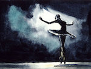

Contemporary
Contemporary dance is a type of dance style that is influenced from classical, modern, and jazz dance. When it comes to technicality, it closely resembles modern, ballet, and classical dance.
Contemporary dance takes a lot of strength in legwork, foot work, improvatisation, and a lot of controlled falls and recovery. This style of dance is typically known as a free flowing and smooth style where there is a lot of emotion and grace.
Hip-Hop
Hip-hop dance was built upon by three main styles which are breaking, locking, and popping. These styles are refered to as street dance where they are primarily performed with hip-hop music. Since the three main styles, hip-hop has evolved to more styles.
Street styles hip-hop has evolved to include jookin', turfing, jerking, and krumping. Studio styles hip-hop has evolved to include commercial/new style, jazz-funk, and lyrical hip-hop.
Ballet
Ballet is a highly technical dance style that originated during the Italian Renaissance. The techniques of ballet is used in many other dance genres and may come as a foundation to those styles.
Ballet is typically performed with classical music, costumes that include leotards and tights, and the signature ballet slipper or pointe shoe. For more advanced dancers, pointe shoes are used so that dancers can dance on the top of their toes. Styles within ballet include classical, romantic, neoclassical, and contemporary.